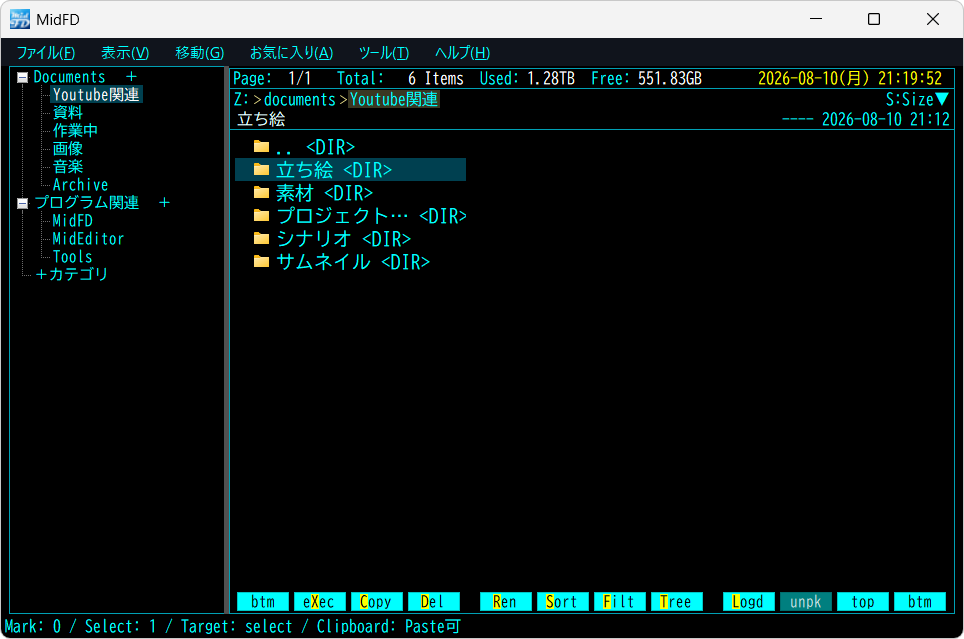

Official download page

FD／WinFD風の操作を選べる、Windows 10／11向けの軽量ファイラー
キーボード主体で、ファイル操作を素早く進める。
Explorerとコマンドラインの間で使える軽量なGUI補助ツールです。
Runtime が不足している場合は 導入ガイド を確認してください。

ダウンロード / 動作要件
通常版
MidFD-win-x64.zip
ZIP を展開して MidFD.exe を起動するだけで使い始められます。MidFD本体はインストール不要です。動作には .NET 10 Desktop Runtime x64 が必要ですが、導入済みの環境では追加インストールは不要です。
動作要件
- OS: Windows 10／11 64bit
- Runtime: .NET 10 Desktop Runtime x64
起動時に「Download it now」ボタンが表示された場合は、そこからRuntime を追加できます。それ以外の方法は 導入ガイド を参照してください。
MidFDの特徴
パンくずや直接パス入力、環境変数を含むパス、QuickAccess、Bytes表示で、目的の場所と情報へすぐに到達できます。
大量のフォルダーを一括Markし、操作後もMarkを維持。MarkSlotの保存・復元、別ドライブ間の移動、symlink・junction、管理ゴミ箱にも対応します。
7-Zipの標準ダイアログやZIPのDrag操作、画像・テキスト・Markdown・CSV/TSV・SQLite・動画プレビューを使えます。必要な外部ツールも後から連携できます。
縦型／横型、使い方に合わせて選べるタブ表示
縦型ではタブを左側にまとめ、カテゴリごとに複数の作業場所を整理できます。従来の横型表示も引き続き利用でき、画面上部のタブとカテゴリから作業場所を切り替えられます。
初回セットアップでは「縦型（推奨）」と横型から選択できます。
クイックスタート
まずは以下の主要な基本キーを覚えるだけで、MidFD の操作を始められます。
| キー | 動作 |
|---|---|
| ↑ / ↓ | 選択項目の上下移動 |
| Enter | ..は親フォルダー、フォルダーはMidFD内で移動、ファイルは対象に応じて開く／実行 |
| V | 選択ファイルを内蔵Viewer／Previewで表示 |
| Z | フォルダーはExplorer、ファイルはOSの既定アプリで開く |
| X | コマンド実行Dialogを開く |
| Backspace | 親フォルダへ移動 |
| L | 移動履歴（Logdsk）からディレクトリを素早く移動 |
| Q | よく使う場所（QuickAccess）を開く |
| Ctrl+Shift+P | コマンドパレットを開き、機能、設定、外部ツールなどを検索して実行 |
最新公開版の主な改善
Release
外部ツールとの柔軟な連携
外部ツールは初回起動の必須条件ではありません。 必要になったら後から設定の「外部連携」タブに登録し、MidFDから素早く呼び出すことができます。
詳細ガイド
Release verification
確認情報
配布元、ファイル名、サイズ、公開日時、SHA256 の取得状態を表示します。
GitHub Releases から確認情報を取得しています。